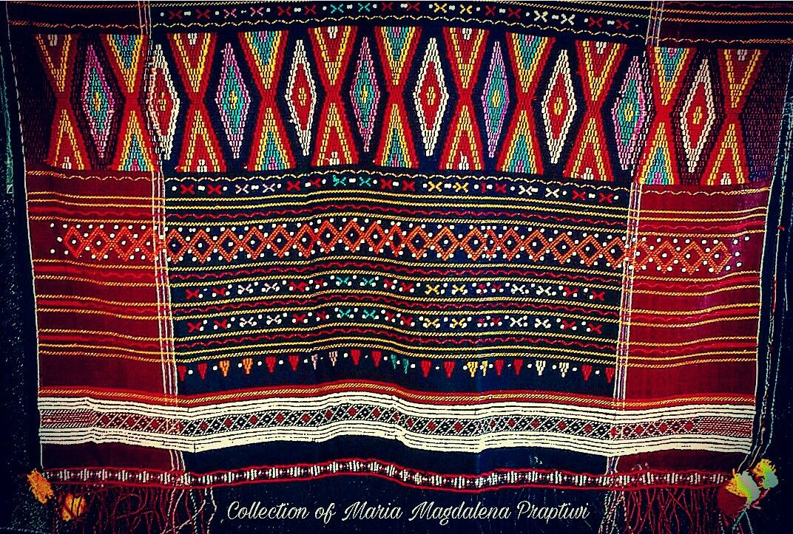
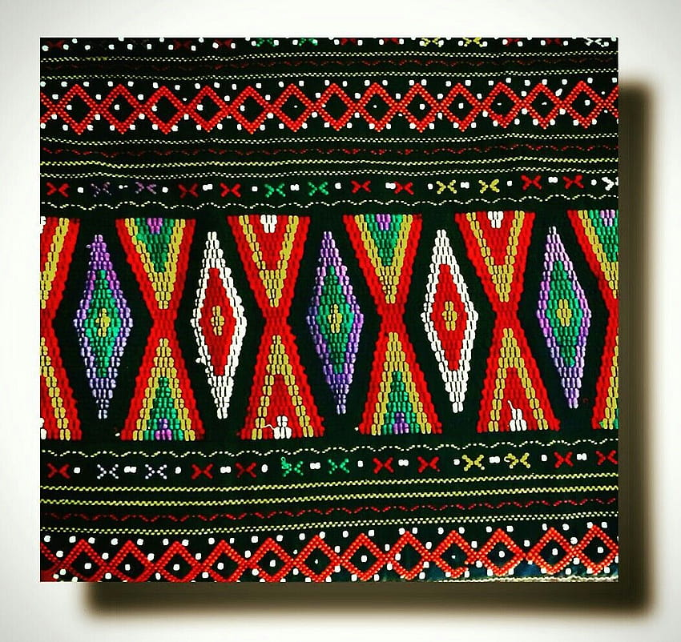

Pelestari Budaya Ulos Tradisional & Inovator Ulos Modern
Kami adalah komunitas yang berdedikasi untuk melestarikan dan mengembangkan warisan budaya Ulos Batak. Dengan menghormati tradisi leluhur dan merangkul inovasi modern, kami hadir sebagai jembatan antara generasi.
Website ini menjadi platform edukasi tentang kekayaan makna Ulos tradisional sekaligus showcase perkembangan Ulos kontemporer dalam dunia fashion modern.

Ulos tradisional adalah manifestasi nyata dari filosofi hidup orang Batak. Setiap jenis Ulos seperti Ragidup, Sibolang, atau Bintang Maratur memiliki fungsi dan makna khusus dalam siklus kehidupan.
Ditenun secara manual menggunakan alat tenun tradisional (gedogan) dengan teknik turun-temurun. Menggunakan bahan katun atau sutera alami dengan pewarna dari tumbuhan.
Ulos modern mempertahankan nilai-nilai dasar budaya Batak dalam bentuk yang lebih kontemporer. Tetap menghormati makna tradisional dengan interpretasi yang relevan untuk kehidupan modern.
Baik dalam bentuk tradisional maupun modern, Ulos tetap mengandung filosofi Dalihan Na Tolu - sistem kekerabatan Batak yang menjadi jiwa dari setiap helai kain. Nilai-nilai penghormatan, persatuan, dan penghargaan terhadap leluhur tetap hidup dalam setiap motif.

Perkembangan Ulos modern adalah jawaban atas tantangan zaman. Dengan mempertahankan makna sakral namun dalam bentuk yang lebih praktis, Ulos tetap relevan bagi generasi muda dan dapat dinikmati oleh masyarakat global tanpa kehilangan identitas aslinya.
- Pepatah Batak
Project Manager
riskiroha24@gmail.com
+62 822 7260 4189
Anggota
dorasianipar13@gmail.com
+62 812 6484 6202
Anggota
tumpalsiahaan@gmail.com
+62 822 7726 5710
Jl. Balige No.88, Gasa Ribu
Kec. Laguboti, Toba
Sumatera Utara
+62 822 7260 4189
@informasiulos.com